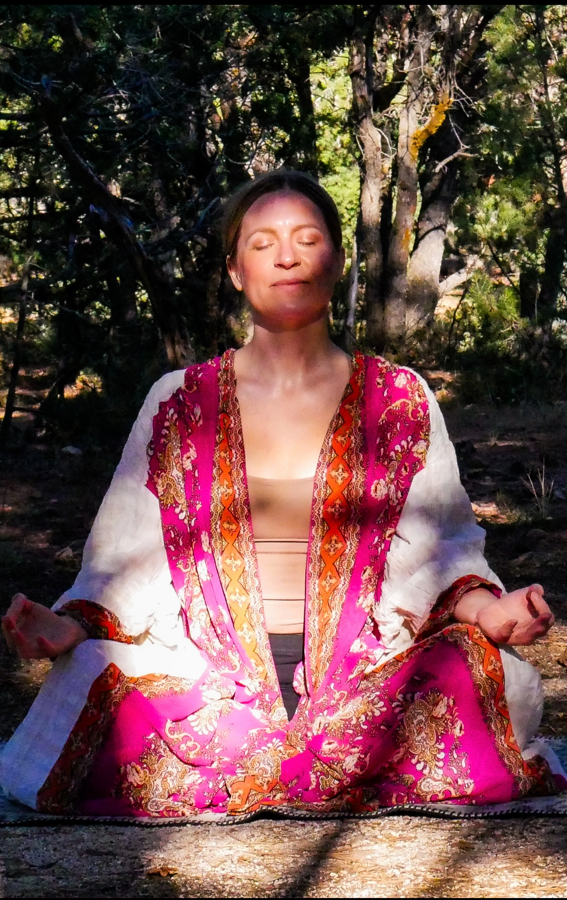
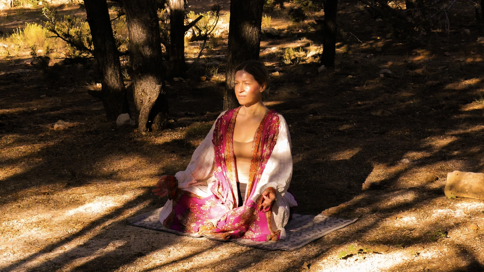
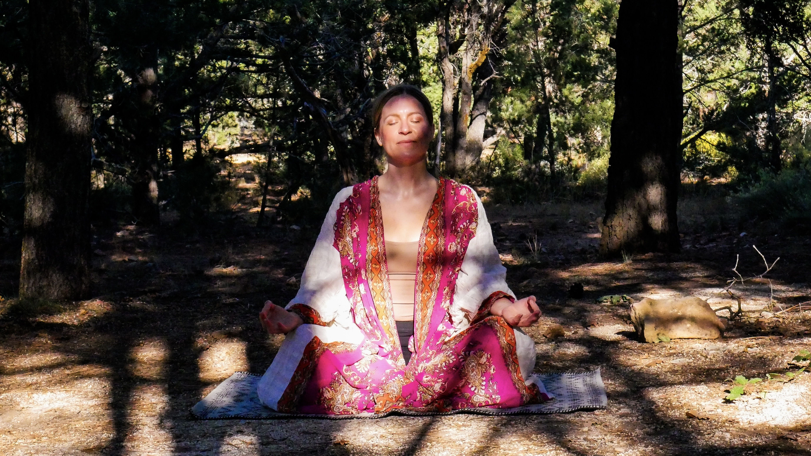

A slow, grounded yin practice woven to the cycles of moon, sun, and the wheel of the year — gatherings for those who remember that rest is its own medicine.
Summer Solstice Experience →Each solstice and equinox offers its own quality of light — a different way the body is asked to listen. The seasonal circle moves through all of them, one season at a time.
The body thaws. We meet emerging light with soft hip openers and the slow unfurling of winter's stored tension.
At the peak of solar fire we turn inward — grounding deep postures of the heart while the sun holds the sky the longest.
The balance tips toward dark. A practice of letting go — lung and large intestine meridians, the breath of surrender.
The deepest dark. We honor the body's need for pause — kidney meridians, deep rest, the medicine of the inward turn.
The modern nervous system is chronically tuned for output. We sleep through the seasons rather than with them — insulated from the light that once organized our physiology, deaf to the moon's quieter pull on water, tissue, and sleep. Seasonal practice marks time the way the body already understands it — as turnings, not deadlines — meeting the fire of summer, the grief of autumn, the stillness of winter, the rising of spring. Lunar practice tracks a subtler rhythm older than any calendar: the full moon's release, the new moon's quiet beginning, cycles the body keeps carrying whether we listen or not.
The science of the long hold.
The wisdom of the turning.
"The body is a seasonal instrument.
Quarterly practice is how we tune it."
Every Heather Jade MVMT gathering follows the same deliberate architecture — three phases engineered first to bring the nervous system down, then to open precisely the meridians the season is asking about. Same arc. Different medicine, each time.
Arrival, breath, and grounded opening. The first signal to the nervous system that it is safe to land. Vagal tone begins its downshift; the body remembers how to exhale.
Long-held yin postures — three to seven minutes each — targeting the specific meridians alive in this season. Fascia softens. Stored emotion surfaces. The body does what only stillness permits.
Extended savasana, somatic reflection, and the quiet setting of intention for the season ahead. Meridians open. Nervous system resettled. You leave metabolized, not depleted.
An hour and a half of long, slow holds set against the longest light of the year. Gentle seasonal guidance, restorative shapes, and quiet attention to what the body has been carrying into summer.
Reserve Your Place →Two hours to soften, release, and reset as the brightness of solstice begins to turn. Long-held postures, intentional breathwork, and a curated sound experience — ambient tones, subtle frequencies, immersive music — to guide you into deeper rest. Timed to the evening's golden light.
Reserve Your Place →
I've been on the mat for more than twenty years — long enough to feel seasons move through my body in ways I could never have planned for. Yin is what taught me to stay.
For the last ten years I've been guiding others through this slower practice — certified, studied, and still learning. My work lives at the meeting place of body and calendar: how the moon pulls, how the seasons ask different things of us, how stillness becomes its own kind of movement.


A small library of practices — brief moments and full sessions — for the days between gatherings, or for when you just need to land somewhere quiet.